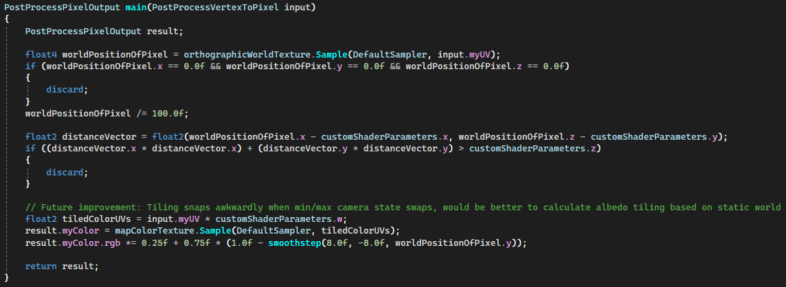

Dynamic Minimap Generation via World LOD Grid
(Work in progress for Echoes in the Murk)

Showcase
Topology Rendering and Culling Shader
Minimap UV Translating Shader
Max Radius Minimap in a Smaller World

Minimum Radius Minimap in a Smaller World

World Grid and Map Setup

World Grid Calculations

Minimap Calculations
Rendering and Culling the Geometry